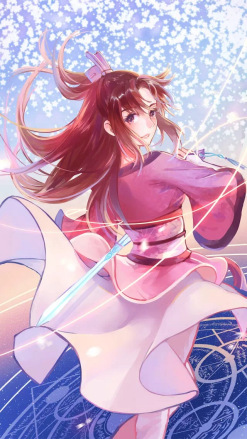
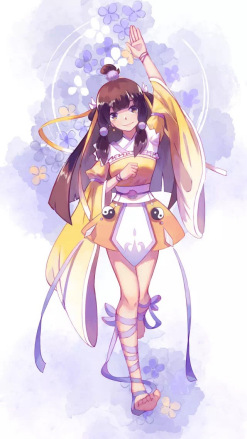
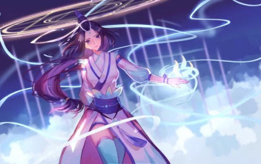

| 人物 | 故事 |
|---|---|
| 杜凌菲 | 在灵溪宗的杜凌菲是她的凡身，在血溪宗冒充血梅，被黑衣人称为“小祖”，本对白小纯的怕死极为厌恶讨厌，但后因白小纯救其一命对其产生好感并且喜欢白小纯。在灵溪宗附近的洞府随九道黑影离开。在白小纯帮助宋君婉争夺中峰血子时，疑附身杜血梅，被白小纯易容的夜葬打破面具，发现其为杜凌菲，也知道夜葬为白小纯所化，出血祖身体时还杜血梅神智。曾在星空道极宗，是来自通天海的通天使者，在白小纯刚进入星空道极宗时，赠火属性天人魂一枚，帮助白小纯渡过初期难关，实力不明，和天尊为父女关系。为女主之一，修炼了长生卷。结局时出现在邪皇朝一小镇的古庙中带发修行。修为半神。 |
| 宋君婉 | 白小纯道侣，宋缺小姑，实力天人后期（永恒仙域时期），原中峰大长老。爱慕夜葬（白小纯假扮）。已怀有身孕，通天世界崩溃后流落到永恒仙域被铁蛋找到并守护，后被邪皇朝大皇子抓住，欲将其体内的孩童炼化成为血脉的元阳之气，进而获取白小纯血脉的秘密而导致生命本源亏损，被白小纯救下并得残扇器灵帮助送入生死道塔内恢复本源，为白小纯生下一女白小小。 |
| 侯小妹 | 白小纯的红颜知己，灵溪宗时因白小纯贩卖外门弟子名额而结识，因为小乌龟事件而逐步对白小纯萌生情愫，常伴身边,在天尊收徒的阴谋中，因体质与鬼母修炼功法相通，被其看上收为弟子，与张大胖前往另一个世界与白小纯育有一子 |
| 周心琪 | 南岸五大美女之一，有着罕见的草木灵脉，药道上更有着惊人潜力。曾经是白小纯的邻居，因白小纯一系列的无心之失，对他产生怨意。白小纯在蛮荒历练时不幸死亡 |
为突破永恒，复苏了永恒大界的生命族群，存在于永恒大界新生种族的传说中，被一百零八万界的生灵尊称为星空之源。
于仙界主宰道尘仙尊头颅中获取一丝仙界气运，道种升华晋升太古。 魁皇朝魁皇 天尊后期，挑战邪皇胜利，夺取邪皇朝一片仙域，建立魁皇朝，被众人拥为魁皇。
从圣皇的莲池里得到天龙鱼，莲子，莲藕并且吃下，为永恒之母认可，突破天尊
从通天世界大战中，融合杜凌菲长生卷，突破至准天尊。